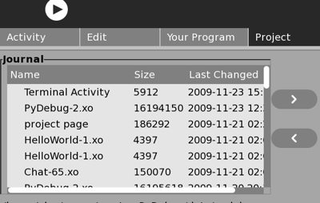

The software which defines a "Sugar Activity" is totally contained in a directory and it's subdirectories. The name of this root directory describes the activity and ends with the ".activity" suffix (as an example, the command line activity is contained in the "Terminal.activity" subdirectory). Examine the files and folders that are installed on your machine by clicking on the middle box on the left side of the project page.
These activity bundles can come from at least three distinct sources:

The Project Page is divided vertically into two halves. The left side includes various sources and destinations where your program can reside. The right side shows the contents of the activity.info file and the collection of files that make up your application. The right side of the screen can be thought of as a sand box or playpen where your program can act, misbehave, and show all its "bugs". As you develop the python programs that make up your activity you may want to save it fairly often just in case one of your ideas turns out to be a blind alley.
The top box on the left side represents the journal. At any time you can save the current state of your program to the Journal. You do this by clicking on the left arrow between the Journal box and the playpen. The process of creating a bundle is computer intensive and slow, but the end result conserves space on the disk, and bandwidth when the activity is being shared across the network. When you do this it is saved in the bundled format mentioned above.

When you click on the right arrow, you are instructing the debugger to load an XO file into the workspace. This will replace any activity that is already occupying the workspace. The checksum of the activity that is about to be overwritten will be checked against the checksum stored away the last time the activity was saved. If there have been changes since the last save, a notification will be presented before any changes are lost.
The middle box initially labeled /home/olpc/Activities/. This is a list of all the Activities that are loaded on your XO. You can highlight any of these activities and load it into the workarea of the debugger. Then if you click on the edit tab, you will find that up to five python program files are automatically loaded. The /home/olpc/Activities/ directory, is read-only. You do not have sufficient permissions to write to this location.
By clicking the "home" button, the user can switch to a location where storing data is permitted. In Unix computers, this place to store your own files, is sometimes called the "home" directory. When your home directory is displayed, the "left arrow" is visible, and the debugger is able to copy your whole directory tree, in the full unzipped form. Limited only by your total disk space you can keep any number of activity trees in your home directory. The "home" button toggles between the "installed Activity" directory and the "home" directory.
The Examples box provides a set of templates and features of the XO which are chosen to be helpful toward the objective of developing activities.
The workspace for the Activity under development is the right side of the screen:
The project name will be used as the first part of the root directory for your activity. In order to function properly, the second part of the root durectory will be set automatically by the debugger to ".activity". The version is included in the XO file name, and displayed in the journal. It should be changed whenever you make a significant change to the program.
The Unique ID must be some string of characters that is that: unique. This will be used by the dbus session manager to identify your activity and service it properly. The OLPC developers suggest that you use a url that you own, or the prefix "org.laptop" plus a name that you place in the OLPC git repository.
To start up properly, using the standard desktop, the start-up script needs the name of the module, and the class which will start your activity. This will probably be the class you write which sub-classes the "sugar.activity.activity.Activity" which is the starting point for most activitiies.
Your activity needs a "SVG" icon to represent it on the desktop. This needs to be placed in the "activity.info" sub directory under the root or your Activity.
The activity size and bundled size give you some indication of the size on disk, and the size for transmission when your activity is being shared with other XO's over the network.
The hostname and port fields and not useful debugging using a single XO machine. They should only be changed when two XO's are begin used to debug a program. In this case, you should enter the child's ip address into these fields on the parent machine.
 When you load an Activity into the PyDebug workspace, the Editor will automatically load the 5 largest python programs, (those filenames ending with ".py") from the root Activity directory. Whenever you start running your program, before the first breakpoint is reached, any changes that you have made to your programs will be saved to the disk. If you do not want this automatic saving of changes, you should click on the "X" on the tab of the file that you do not want to save, and answer no to the alert asking whether you want the program to be saved. If you do not have permissions to write a file, perhaps you have cut and pasted from an installed Activity, the debugger will not write any changes, and will not issue any error messages.
When you load an Activity into the PyDebug workspace, the Editor will automatically load the 5 largest python programs, (those filenames ending with ".py") from the root Activity directory. Whenever you start running your program, before the first breakpoint is reached, any changes that you have made to your programs will be saved to the disk. If you do not want this automatic saving of changes, you should click on the "X" on the tab of the file that you do not want to save, and answer no to the alert asking whether you want the program to be saved. If you do not have permissions to write a file, perhaps you have cut and pasted from an installed Activity, the debugger will not write any changes, and will not issue any error messages.
One of the most productive ways to program is to find programs that do approximately what you want your program to do. Then cut and paste that small portion of code into yours, and modify it to do what you want. Often, when you use cut and paste, you will need to change variable names. For this, use the find and replace (magnifier icon).
 From the project page, click on the "Run Program" icon. Or if your have already changed to the "Activity" tab, you can type "sugarun" or the shorter alias "sug". This will start your program as a sugar activity, if possble, and stop it at the first "import" statement.
From the project page, click on the "Run Program" icon. Or if your have already changed to the "Activity" tab, you can type "sugarun" or the shorter alias "sug". This will start your program as a sugar activity, if possble, and stop it at the first "import" statement.
At that point you can enter a "c" for "continue", and the program will continue until it finishes or until it encounters an unhandled exception. Alternatively you can set "b"reakpoints, "s"tep, or make the call and return to the "n"ext statement in the current routine.
Use <alt>-<tab> to switch between the graphical output page created by your application, and the text-mode debugging screen of the PyDebug Activity.
The original plan, at this point not entirely abandoned, was to have your graphical output be visible as the third tab of the main Toolbar. At this point this objective seems less important than other objectives.
The help section of PyDebug is drawn from many web sites and includes useful information and documentation.
One of the most useful sources of information is the python programs themselves that exist on your XO. The XXX icon on the help page starts up a local html server called pydoc. This will give you summary information and how to interface with all the sugar programs.
For people who have some knowledge of programming, but are new to python, the "DIVE INTO PYTHON" is a short introduction to the python programming language.